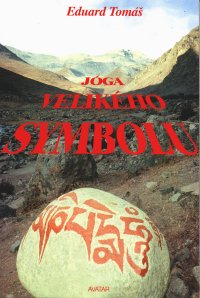

| název: | Jóga velikého symbolu (orginál na Avataru) |
| autor: | Eduard Tomá¹ |

Struèný obsah:
Druhý z pøedná¹kových cyklù pøednesených autorem v 60. letech v pra¾ské Unitarii. Autor seznamuje ètenáøe s prastarou tibetskou naukou o Prázdnu, která mù¾e, jak øekl kdysi moudrý jógin Marpa, uèitel Milarepùv, v jediném vtìlení pøivést a¾ k trvalé realizaci Pravdy. Jóga velkého symbolu, jako¾ i ostatní nauky k ní pøíslu¹ející, byly ve své domovinì, v¾dy pøísnì støe¾eny a byly majetkem jen nìkolika málo lidí. Tím se dostaly jen k vybraným posluchaèùm. Proto se øíkalo také "nauky ¹eptané do ucha". Byly to tajné nauky. Dav se nikdy nedozvìdìl o aspar¹ajóze, a kdy¾ nìkdo neoprávnìný získal nedovolené informace o nìkteré z praktik tzv. zakázaných stezek, které sem také patøí, byl za¹it do pytle z dìravé kù¾e a pozvolna utopen. Bylo to drastické opatøení, ale patrnì nutné. Vzniklo proto, ¾e roz¹iøování takových nauk v sobì chovalo vá¾né nebezpeèí. Jejich pøijetí a pochopení pøedpokládalo toti¾ bezpodmíneènì vyspìlý a pøipravený intelekt. Prostý tibetský èlovìk, vychovaný ve víøe v nadpozemské bytosti, bohy, bohynì a démony, by byl býval tìmito pravdami zmaten. Bylo nebezpeèí, ¾e by si je z nepochopení ¹patnì vylo¾il a ¾e by zamítl víru v to ni¾¹í, èemu vìøí, ani¾ by správnì pøijal to, v co vìøit nemohl. Z tohoto dùvodu ani sám Buddha neuèil aspar¹ajóze veøejnì. A nyní se tato nauka dostává k nám spoleènì s jinými naukami a stává se majetkem ¹iroké veøejnosti. Je to mo¾né a dokonce zákonité proto, ¾e je to pøirozené pro mentální vývoj èlovìka.
Ukázka z knihy:
"...I nejvzne¹enìj¹í lidskému vìdìní vze¹lé cíle vedou ke zklamání," praví jóga velkého symbolu. Ale toto není ji¾ lidskému vìdìní vze¹lý cíl. Èlovìk tu pøestává být egem s obaly nevìdomosti a stává se èistým osvícením, pravdou a svobodou. Tady umlká sama jóga a nutno ji odlo¾it, jako se odkládá le¹ení, jeho¾ bylo tøeba k postavení domu. "Laskavé vedení gurua nech» odhalí ¾áku tuto pravdu," pí¹e se v józe velkého symbolu. Ano, tento stav, aby skuteènì do¹lo a¾ k nìmu, vy¾aduje vedení, vedení gurua. Ale ten guru nemusí být nutnì v jiné osobì. Mù¾e být v na¹em vlastním nitru. Na¹e vlastní vnitøní "Já", odevzdáme-li se mu plnì, dovede nás a¾ do tohoto sahad¾a nirvikalpa samádhi. Je to plynulý stav samádhi bez pøeru¹ení, bez vzru¹ení, bez exaltací. Je to stav, v nìm¾ nejsme mimo my¹lenkové pochody, v¾dy» je pozorujeme a kontrolujeme a jsme si jich tudí¾ plnì vìdomi, ale zároveò jim rozumíme a vnímáme je i s celým svìtem jako sebe samého. Pochopením podstaty pohybu a nepohybu vznikla moudrost a v¹echna døívìj¹í nevìdomost o dvojnosti zaniká. Je to, jako kdy¾ tøením dvou døev vzniká oheò. "Jimi zplozen, obì døeva spálí," jak je psáno v sútøe Otázek Ka¹japových. Toto je cvièení, kterému se v Tibetu øíká "analyzující rozjímání poustevníka". Není to v¹ak intelektuální autoanalýza, ale pøímé nazírání bo¾ské intuice a neosobního vìdomí. Vìdomí chápe, ¾e je v¹ím a je zcela ponoøeno a odevzdáno do vlastního bytí, moudrosti a pravdy. Tibetský ¾ák jógy velkého symbolu se modlí moudrou modlitbou: "Cokoliv mi na duchovní cestì vyvstane, nech» to nepotlaèuji ani nepøijímám." Nic nepotlaèuje, nic nepøijímá, jenom poznává. Jemu je ka¾dá my¹lenka ku prospìchu. On ji nepotlaèí, ale také nedovolí, aby mu vládla. Nespokojí se s tím, ¾e ji v okam¾iku jejího vzniku spatøí, ¾e si ji uvìdomí, ale pozná ji v její prázdné formì, èím¾ ji rozpou¹tí. Tak se osvobodí pouhým poznáváním my¹lenek a pochopením nerozluèné povahy ducha a my¹lení jako dvou faktorù, které pro nìho splynuly v jednotu Stejnì tak pozoruje èas. Minulý, budoucí i pøítomný. ®ádná my¹lenka se nemù¾e trvale udr¾et ani v minulosti, ani v budoucnosti, ale ani v bodì pøítomnosti, nebo» v nejbli¾¹ích okam¾icích u¾ je to my¹lenka minulá a ta u¾ není. Tak poznává, ¾e ¾ádná vìc o sobì nemá trvání, tak jako nemá trvání ¾ádný èas. Èas trvá jen z duchovního vìdomí. Vidí a chápe, ¾e vìci jsou samy o sobì neskuteèné, ale ¾e podstata vìcí, která je také podstatou v¹ech tøí èasù, je skuteèná a nemìnná. ®ije ji, nebo» se v ní uvìdomil. Trojnásobný vesmír ¾ádostí, forem a neforem (káma, rúpa, arúpa) je poznán ve své celistvosti. Zdánlivì rozdìlený stav sansára - nirvána se rozpustil do vìdìní nedvojnosti. Vzhled Pravdy se prohloubil v Poznání. Je je¹tì celá øada cvièení, filosofických, jógových, hlavnì tantrických, které patøí do rámce této zvlá¹tní duchovní cesty. Jsou to: Analytické pozorování hmoty a nehmoty. Analytické pozorování jednotného a mno¾ného èísla. ©est velkých tantrických nauk, jako jsou: Nauka o psychickém teple, co¾ jsou jedineèná, ale velmi nároèná cvièení Milarepova. Nauka o snovém stavu, která pøedstavuje pohrou¾ení do pravého bytí snù. Zrcadlující nauka o klamném tìle (Tìlo i v¹echny ostatní viditelné tvary se mìní v zrcadlení pravé skuteènosti (Bo¾í hra). Pøemìna v¹ech vìcí v Boha. Sambhógakája - tìlo Brahmy nebo Buddhy, které nelze rozumem pochopit, za¾ije se alespoò jako zvuk dokonalé bo¾ské melodie. Pøitom se poznává klamná povaha jmen a tvarù). Vzne¹ená nauka poznání èistého svìtla, které je Zdrojem, Cestou i Plodem. Této nauce tøí moudrostí, stvoøeného, tvùrèího a sjednoceného Svìtla, se také øíká Hadí stezka, proto¾e Vìdomí se musí vsunout jako had mezi dvì my¹lenky a zachytit onen jedineèný okam¾ik ¾ivého svìtla mezi nimi. Dále je tu: Nauka o bardu èili posmrtném mezistavu. Uèení o pøená¹ení vìdomí, tzv. FO-WA. Meditace na bezèasé "Já". A vysoce støe¾ená diamantová stezka. Musíme si v¹ak prov¾dy uvìdomit: Naukám je mo¾no vyuèovat. Moudrosti nelze uèit slovy. Nyní nade¹el èas, abychom se rozlouèili s jógou velkého symbolu, s touto rychlou a nesmlouvavou jógou o Pravdì, které jste zùstali vìrni po tak dlouhou dobu. Vìøím, ¾e mnozí z vás budou ¾áky jógy velkého symbolu a¾ do koneèného nejvy¹¹ího cíle. Èlovìk mù¾e odejít, ale nauka je vìèná a neznièitelná! Najde v¾dy du¹e pevné, èisté a odhodlané k jejímu uplatnìní. Nebo» je sama výtvorem i nositelkou neznièitelné síly ze samého støedu tvoøení. Otevøme jí svá srdce dokoøán, nejen teï, ale prov¾dy. A podìkujme pokornì, ¾e nám osud dovolil pravdivé, hluboké a jasné uèení sly¹et, pøijmout a rozumìt mu. Nebo» pøesto, ¾e je snad nejstar¹í z duchovních nauk, je avantgardou kosmického nábo¾enství budoucnosti. Cvièení: Otevøení se moudrosti a dík za milost pøijetí."